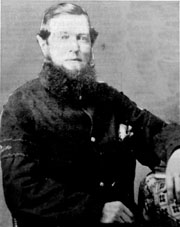

|

NAME: Marcus Remus Canfield
BORN: 1824
DIED: 1903
ALLEGIANCE: Union
HIGHEST RANK: Corporal
UNIT: 27th Massachusetts Infantry, Company F
RECORD: Enlisted on September 14, 1861. Mustered in on September 20
at Camp Reed, Springfield, Massachusetts. Promoted to
corporal on October 1. Assigned as a nurse to Hammond
General Hospital, Beaufort, North Carolina, on January 1,
1863. Discharged on August 5, 1864, and reenlisted on
September 1 at Fortress Monroe, Virginia. Discharged on
December 4, 1865.
|
|
By contemporary standards, 37 year old Marcus Remus Canfield
was fairly old when he enlisted in the Union army late in
the summer of 1861. He fought valiantly for the next four
years, but it was not for any battlefield heroism that his
fellow soldiers remembered him. To them, some of whom were
little more than half his age, it was Canfield's caring
nature that mattered most. He was their surrogate father.
Canfield enlisted in his hometown of Pittsfield,
Massachusetts, on September 14, 1861, and less than a week
later he was mustered into the 27th Massachusetts Infantry's
Company F at Camp Reed in Springfield. The respect his
younger comrades held for him led to a promotion to corporal
on October 1. On February 8, 1862, Canfield was part of a
15,000-man force under Major General Ambrose E. Burnside
that made an amphibious landing on Roanoke Island, North
Carolina, under heavy enemy fire and captured the island and
2,500 Confederate soldiers. From there, the Union troops
traveled to the mainland and captured New Berne on March 14.
Weakened by rheumatism, Canfield remained in North
Carolina after Burnside's expedition. After he recuperated,
he was detailed as a nurse at Hammond General Hospital in
Beaufort on January 1, 1863. When his three-year enlistment
expired, Canfield reenlisted on September 1, 1864, as a
hospital steward at Fortress Monroe, Virginia. He was
serving there when Confederate President Jefferson Davis and
his private secretary, Burton Harrison, were brought to the
fort as prisoners after their May 1865 capture in Georgia.
According to his discharge certificate, Canfield "had the
management of their rations." He remained at Fortress Monroe
until his discharge on December 4, 1865.
After the war Canfield returned to Massachusetts, worked
as a bookkeeper, and served for many years as adjutant of
Post 125 of the Grand Army of the Republic. The men who
served with him always remembered him as a gentle, caring
man. Daniel Bates of Company F recalled Canfield's "care of
men and of others of Co. F, when they were sick and in
distress." In a letter to Canfield in August 1899 Bates
wrote, "Although you may have forgotten the many kindly acts
and services that you conferred on the boys of the Company,
you may rest assured that the boys of '61 have a good memory
and still have a kind regard, appreciation and filial
affection for yourself." Canfield died on December 4, 1903,
in Pittsfield.
Source: Civil War Times Illustrated
36:4 (August 1997), 80.
|